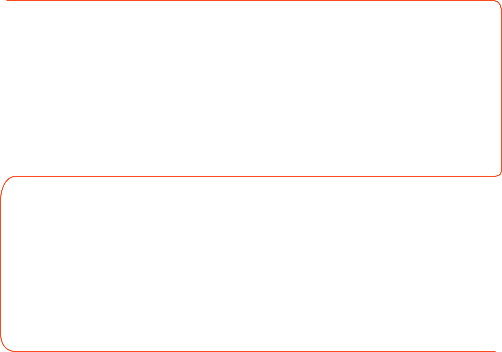
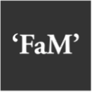

Neix El Festivalet a la cripta de La Central del Raval (8 participants) per omplir el buit de fires de disseny a Barcelona.

Neix El Festivalet a la cripta de La Central del Raval (8 participants) per omplir el buit de fires de disseny a Barcelona.

Es prova una edició d'estiu al Passatge de la Pau, però es decideix mantenir el format de Cita Anual al desembre. La tercera edició creix a la sala Miscel·lània.

Ens traslladem al Convent dels Àngels (FAD). Estrenem els icònics estands amb parets de fusta i incorporem la secció de materials i gastronomia amb el Cafè Cosmo.

Saltem a les Drassanes, al Museu Marítim, amb més de 1.000 m². Complementem la fira amb conferències i documentals com Handmade Nation.

Iniciem la col·laboració amb l'artesà del neó Leo i l'editorial Gustavo Gili organitza una trobada d'urban sketchers.

L'espai es transforma amb temàtiques visuals: des d'un cel amb arcs de sant Martí de neó fins a una selva amb plantes i globus.

Arriben els tallers en directe i neix el nostre marketplace en línia. Substituïm els globus per garlandes de bombetes per ser més sostenibles.

Visita per primer cop de creadors d'Amèrica i serigrafia de bosses en directe per Laser.

Edició en línia (kiosko) per la pandèmia. Estrena a la fàbrica Fabra i Coats amb estètica industrial.
Duduá és l’entitat organitzadora de Festivalet i la responsable de la seva conceptualització, planificació i producció global. Des de l’inici del projecte, coordina la selecció de creadors i marques participants, gestiona la logística de l’esdeveniment i articula la col·laboració amb diferents espais i projectes culturals.
La seva tasca contribueix a consolidar Festivalet com un espai de referència per a l’artesania contemporània, el disseny independent i la promoció d’un consum local, sostenible i conscient.



Flors al Mercat és un esdeveniment col·laborador vinculat a Festivalet que promou la cultura floral, l'artesania i la sostenibilitat a través d'un mercat creatiu amb activitats participatives i propostes plant-based.
Tallers Nómadas col·labora amb Festivalet oferint experiències i tallers creatius centrats en l'artesania, els oficis tradicionals i la connexió amb la cultura local i la natura.
Festivalet col·labora amb el festival REC.0 d'Igualada seleccionant marques participants per formar part de la seva zona de moda sostenible, ampliant així la visibilitat del disseny independent en altres esdeveniments culturals.